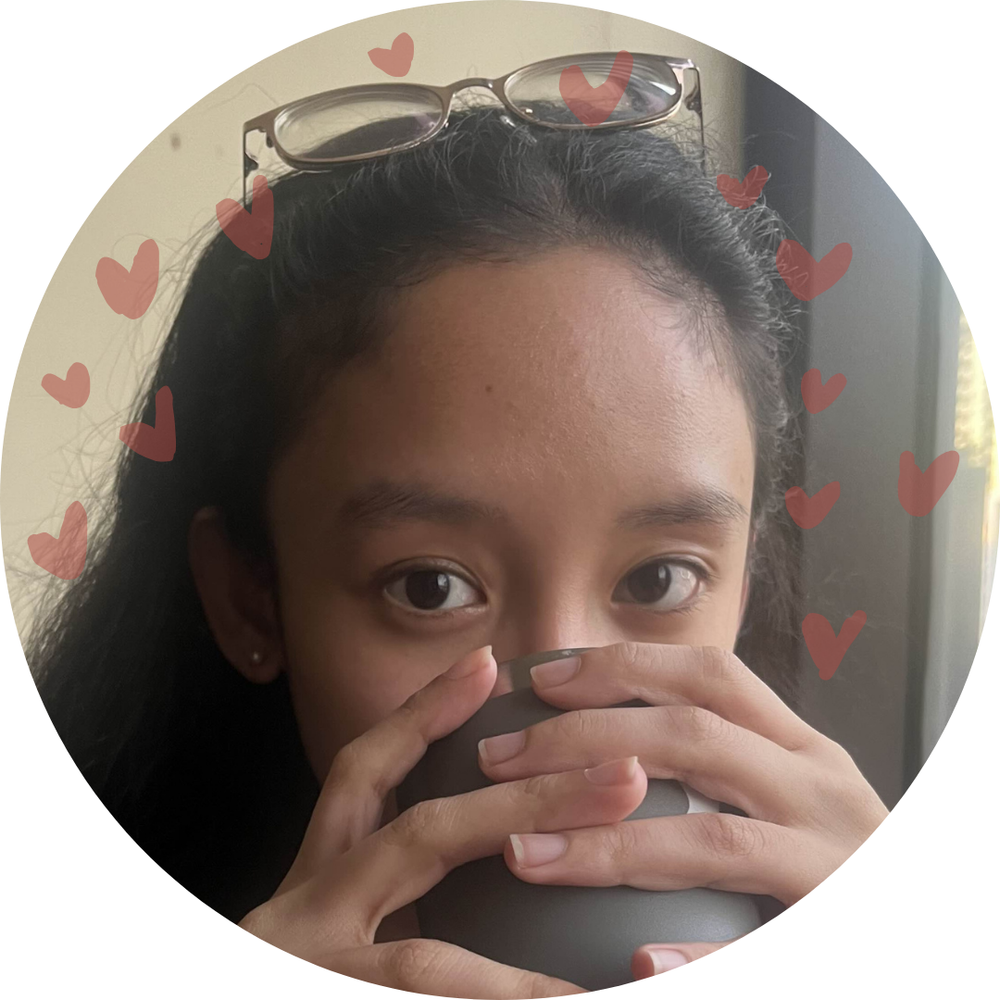
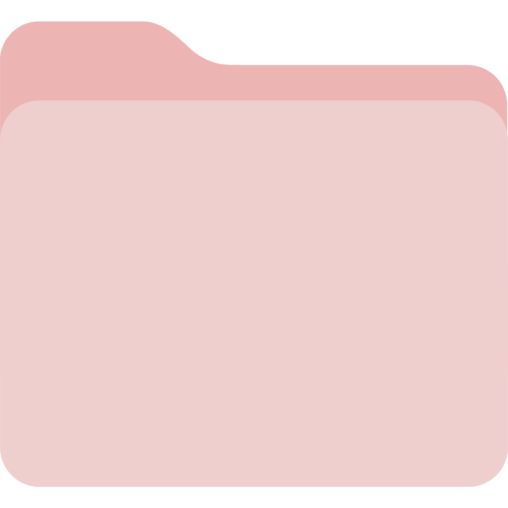

I’m a data science and business administration undergraduate student. Currently, I have experience in financial market research, risk analytics, and algorithmic trading. Although I wouldn’t say I am the best, I also have experience in marketing in the aerospace industry. Currently, I’m looking for an internship position where I can bring my skills, programming expertise, and research-driven mindset to contribute to a fast-paced team.
Below are a list of my finance-related projects. Click on them to view the source code on GitHub!

For this project, I created neural network models to forecast a year’s worth of stock prices for 100 companies on the S&P 500 using daily closing prices with a median model performance of an R2 of 0.93.
For this project, I learned about the crypto trading industry and used skills for big data to process, analyze, and recommend a trading strategy for beginner traders in cryptocurrency using the Binance full history dataset.
For this project, I compared the performance of portfolios from principal component analysis, rotationally invariant estimator, the Markowitz Portfolio Optimization model, and the Fama-French Three-Factor Model to determine which one would be best suited for different investor trading appetites using their Sharpe ratios.
For this project, I improved short-horizon trading decisions by creating a GARCH volatility forecasting model against baseline methods which consistently yielded predictive accuracy and more profitable, risk-aware trading returns.
For this project, my teammates and I developed a website that would recommend business locations for Filipino SMEs that upholds the Sustainable Cities and Communities (SDG 11) which won second place in Hackercup 2025, an interuniversity hackathon.
JPMorgan Chase & Co.
June 2026 - Present
I worked under the Trade & Working Capital department where I learned more about the operations of J.P. and I picked up and developed skills that would be valuable as an analyst such as Tableau and Alteryx.
AIM Analytics, Computing, and Complex Systems Laboratory
November 2025 - Present
As part of the Applied AI in Business subgroup, I am currently writing academic papers on my research interest, quantitative finance. I have also contributed to a predictive model for ship building and learned to handle different file formats.
China Banking Corporation
November 2025 - January 2026
During my internship, I learned about the standards of reporting for financial institutions and created both a feasibility study and a prototype that integrates AI in creating risk simulations for the company that increases productivity from 3 days of manual labor to minutes.
Asian Institute of Management (AIM)
January 2025 - November 2025
I was appointed as a tutor for succeeding cohorts because of my academic excellence in these subjects. Here, I reinforced subject expertise while supporting student learning by simplifying complex concepts and strengthening problem-solving skills.
Galamad Aerospace
June 2024 - August 2024
As an intern, I contacted over 120 venture capital companies and started partnership discussions for Galamad. I also connected with existing departments to organize an online competition to increase brand awareness.
Click any icon to get my contact details ♡
✦ ✦ ✦